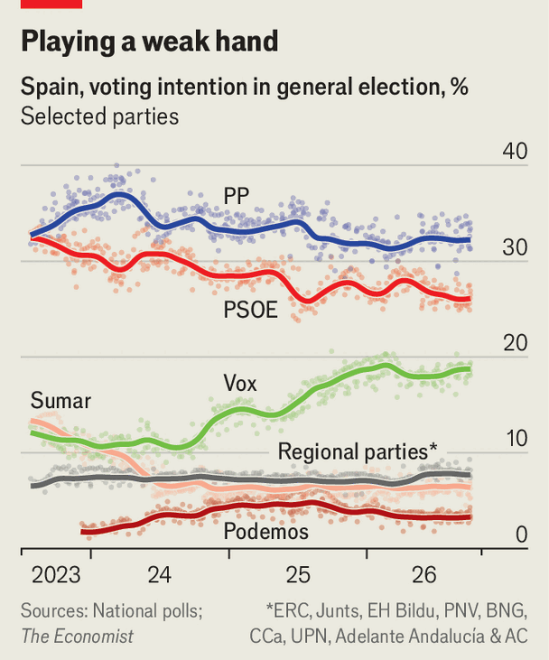

Pedro Sánchez gambles on a snap election—and populist policies
Spain’s prime minister makes a last stand for the European left
Oct 8th 2026
PEDRO SÁNCHEZ’S talent for bold ventures has helped him survive for eight years as prime minister atop minority governments. But his decision on October 5th to call an election for November 29th, months before it was due, is a last-ditch gamble. He hopes to capitalise on indignation over an elderly woman’s eviction from her home—a symbol of Spain’s housing crisis. Mr Sánchez, the last important standard-bearer of the left in the European Union, has framed the election in populist terms, as a contest between affordable housing and the privileges of right-wing elites. That will be a challenge: for more than a year, opinion polls have put the right-wing opposition well ahead.
The prime minister has been on the defensive for months. His government mishandled a migrant surge from Morocco into the Spanish exclave of Ceuta in July. Leaders of his Socialist Party have been charged with corruption; his wife faces trial for influence-peddling (she and he insist on her innocence). But the eviction of Maricarmen Abascal, an 87-year-old who left her home of 71 years on September 23rd (and died in hospital on October 7th), let him change the subject. With leftist protesters camped out in Madrid, Mr Sánchez dusted off an emergency-housing decree from earlier this year. This would temporarily have banned evictions of “vulnerable” people, extended rental contracts and barred corporate landlords from buying properties at below-market prices.
This approach to housing, favoured by the global left from Berlin to New York, protects existing tenants but leads to falls in the supply of rented property. The decree was rejected in parliament on October 2nd when Junts, a Catalan nationalist party, joined other right-wing parties to vote it down. Mr Sánchez had lost the fickle majority he had cobbled together among the left and regional nationalists.
In announcing the election, the prime minister complained of an obstructive opposition and “very powerful economic and social elites”. He boasted that he has refused to sign up to Donald Trump’s demand to spend 5% of GDP on defence. On his watch Spain has become “a global reference point of peace, feminism and prosperity”, he claimed. He also boasted of the economic-growth rate, forecast to reach 2.5% this year.

This appeal is calculated to mobilise disillusioned left-wing voters. It may have some success: rent controls are popular. With the country divided into two political blocks, Spanish elections are no longer won in the centre, but rather depend on which side’s supporters turn out more. Polls give the conservative People’s Party (PP) 33% and the Socialists 26% (down five percentage points since the last election in 2023). The big gainer is Vox, a populist-right party which is polling at 18%, up from 12% in 2023. The populist left, which won 12% last time, is leaderless and divided (see chart).
“At last”, said Alberto Núñez Feijóo, the PP leader, in response to the election announcement. His party won the most parliamentary seats in 2023. The right has never forgiven Mr Sánchez for blocking it from governing by allying with Junts, in return for an amnesty for Catalan separatist leaders involved in an illegal independence bid in 2017. Many legal scholars called the amnesty unconstitutional, as did Mr Sánchez himself until he needed it to stay in office.
The PP will campaign against corruption and government incompetence. Mr Feijóo accuses Mr Sánchez of failing to solve the housing problem or improve schools and health care despite record tax revenues. Vox will point to Mr Sánchez’s championing of immigration as a contributor to the housing crisis. Spain builds only 80,000 homes a year, but there are at least 700,000 more households than in 2023.
Mr Sánchez is by far the most effective campaigner in Spanish politics. In the snap election in 2023 he hung on partly by whipping up fear of Vox. The polls suggest that if the PP forms a government, it will depend more on Vox than it might have done then. But they govern together in several regions, and the public has accepted that the populists cannot be excluded for ever.
The prime minister may well narrow the gap, but it will be hard for him to close it. Mr Feijóo comes across as plodding in public (though he is more persuasive in private), and his party is notoriously accident-prone in campaigns. Nevertheless, it is his election to lose. Should he beat Mr Sánchez, the continental left will lose its last major champion. ■